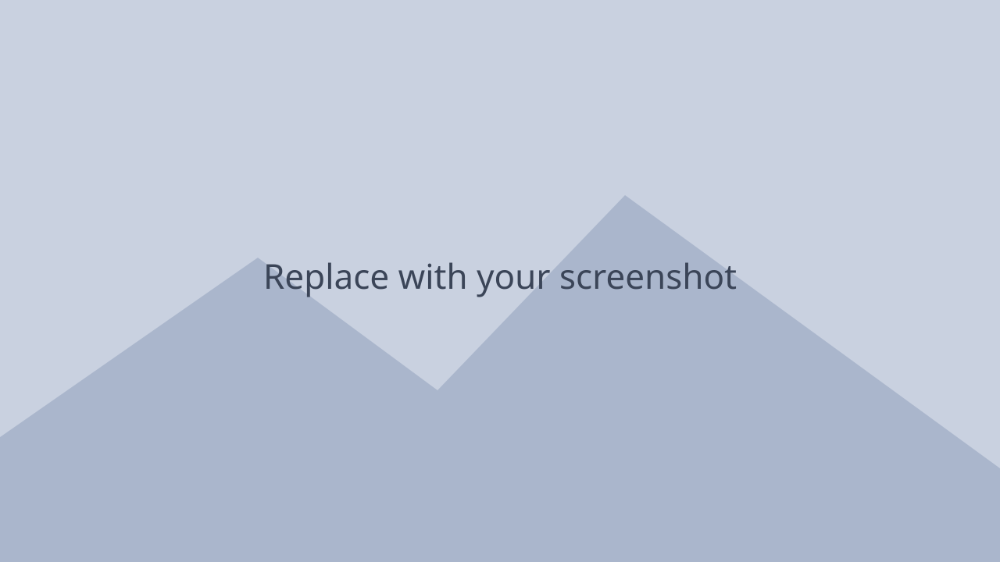

Burger bros
2d platformer for end of year group project along side art and design students.
- Role
- Gameplay programmer
- Tools
- Unity, C#
- Team
- One of 2 programmers in a team of 7
- Timeframe
- 6 weeks
About the project
The game was a first-year group project, made in Unity to fit a brief for a mascot platformer with two levels, enemies and collectables. It was showcased at the university’s annual games showcase for our year group.
What I worked on
- I was responsible for implementing most of the player systems, including movement, jumping, dashing and grappling. I also implemented the animations for the player and enemies, and created a shader in Unity Shader Graph for the moving oil.
- One of the main challenges on this project was implementing the grappling and dashing mechanics. The designers wanted the characters to be able to air dash through gaps and grapple to specific points around the level. To achieve this, I used Unity features such as IEnumerators and coroutines alongside a distance joint to build the movement the designers needed.
- I learned a lot from this project, as it was my first time using Unity and working in a team alongside artists and designers. I took on the role of Scrum master for the group, leading our weekly Scrum sessions and helping keep the project on task within a limited timeframe.
Screenshots
